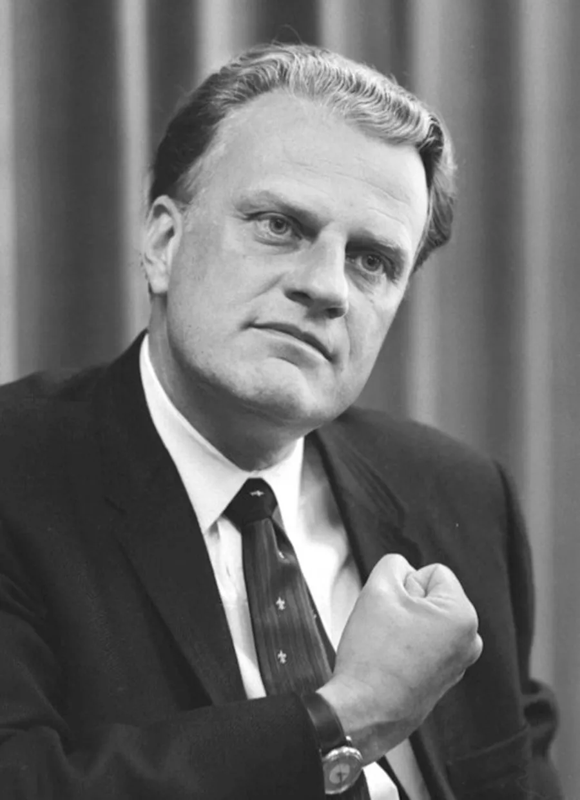
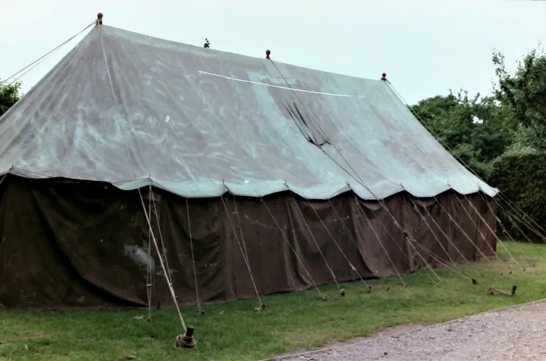
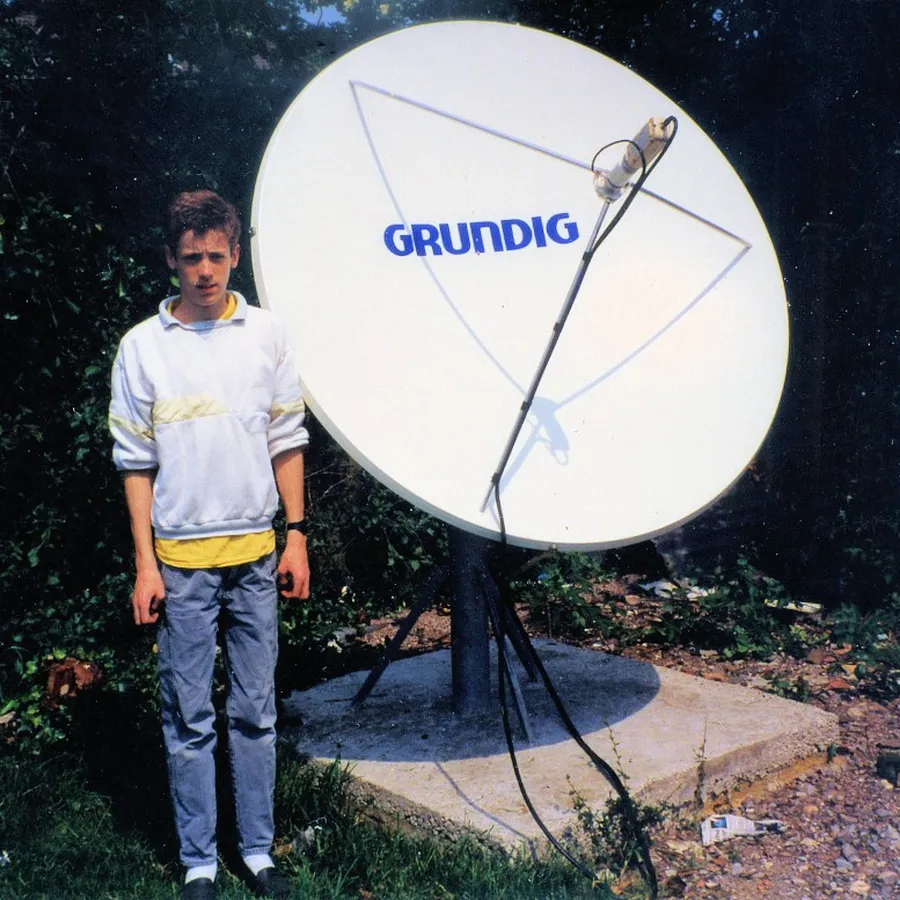

Billy Graham Crusade
Earls Court July 1989
by Adrian King

William (Billy) Franklin Graham Jr. (1918 – 2018) was an American evangelist. He was an ordained Southern Baptist minister and civil rights advocate whose broadcasts and world tours featuring live sermons became well known in the mid to late 20th century. Throughout his career spanning over six decades Graham rose to prominence as an evangelical Christian figure in the United States and abroad.

I went to a Crusade Relay in an RHM Grain Silo on Poole Quay in 1966. But tech had moved on and in 1989 things were a lot different.
It was Bert Pressey that had the idea and he ran it past Stan Broomfield
“During July 1989 the Earls Court Billy Graham Crusade will be sent around the UK using satellite links and this could be an Alderholt ground-breaking event involving all the churches.”
The marquee at the Tabernacle would be erected for their Church Anniversary on the last weekend in June, and it would be retained for the gathering together.

The live link used for the London Crusade was a Reuters News geo-stationary satellite. The link info was supplied from the Billy Graham Crusade organisation UK Mission. Once loaded into the Grundig tracking system the 2.5 metre motorised dish array at Audio Vision tracked and found the group satellite position. This was followed by many test receptions for a few days prior to the event. Then it was all hands to organize members from all the Alderholt Churches to run the event for the first week in July.

The Tabernacle Church facilities were used for the event requirements and parking was courtesy of Ron Hoods field in Camel Green Road. I can still remember it.
People from all the village churches were in the tent at the Tabernacle watching two large state-of-the-art Grundig and Panasonic 16:9 32 inch colour televisions. No large flat screens in those days.
Some of Billy Grahams United Kingdom Crusades
| 1954 London Haringey Arena Crusade | 1st March to 22nd May |
|---|---|
| This was his first major UK crusade and a turning point in his international ministry. It drew large crowds and significant media attention. | |
| 1955 Glasgow Kelvin Hall | March to April |
| A continuation of the momentum from the London crusade showing growing support across the UK. | |
| 1966 London Earls Court Crusade | March to April |
| Reaffirmed his strong influence in Britain over a decade after his first visit. | |
| 1984 Mission England | May to July |
| Multiple cities including Birmingham, Bristol, Liverpool, Norwich, and Wembley Stadium. The Wembley Stadium event on 9th July drew over 80,000 people. | |
| 1989 Glasgow SECC and London Earls Court | |
| These were more focused events compared to earlier crusades. Reaching a worldwide estimate of 25,000,000. | |